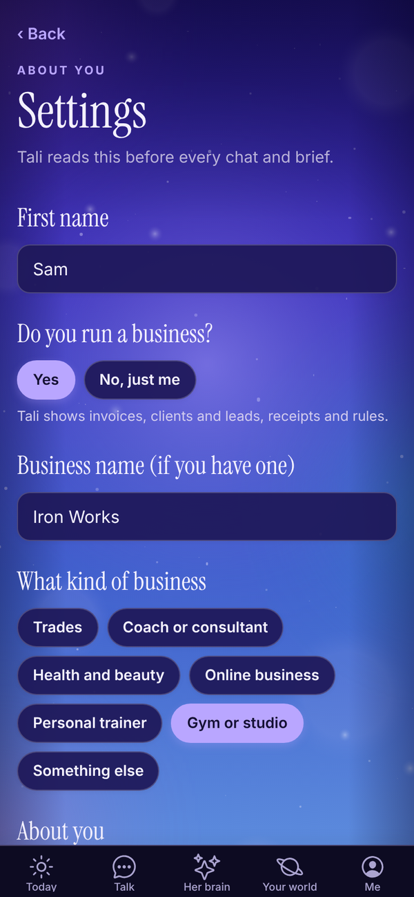
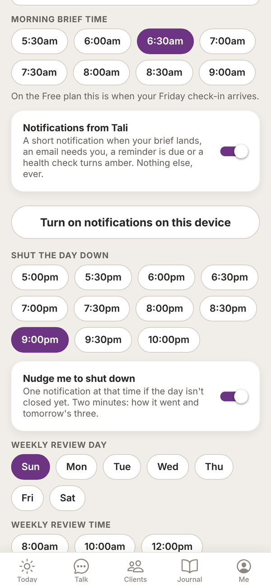
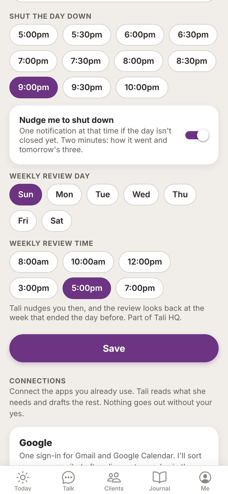
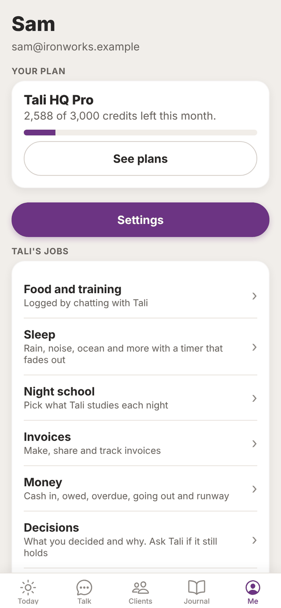
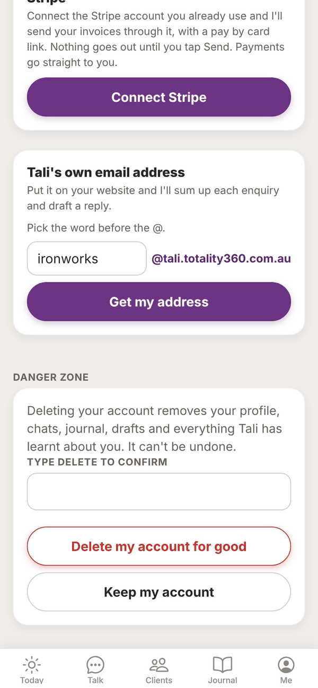

Tali HQ guide
Settings and account
Change your details and the business switch, brief time, notifications, shutdown and review times, connections, privacy, and sign out or delete your account.
Settings holds everything Tali reads about you before every chat and brief, plus your times, notifications and connections. Open Me, then tap Settings.


About you#
- First name: what Tali calls you.
- Do you run a business?: tap yes or No, just me. With a business, Tali shows invoices, clients and leads, receipts and rules. Just you, and she keeps to your life: people, money, health and goals. Your business details are kept if you switch back.
- Business name (if you have one). On Pro, a line underneath says Tali's email address stays the same if you change this.
- What kind of business: Personal trainer, Gym or studio, Coach or consultant, Trades, Health and beauty, Online business or Something else.
- About you: up to 1,000 characters. Tell Tali the things she should always keep in mind.
Morning brief time#
Pick any half hour from 5:30am to 9:00am. That's when your morning brief lands. Tali HQ On the Free plan this is when your Friday check-in arrives. Free
Notifications#
Notifications from Tali sends a short notification when your brief lands, an email needs you, a reminder is due or a health check turns amber. Nothing else, ever.
To get them on this phone or computer:
- Make sure the Notifications from Tali switch is on.
- Tap Turn on notifications on this device.
- Allow notifications when your browser or phone asks.
- Tali sends a test straight away so you know it works.
Do this on each device you want notifications on.
Shut the day down#
Pick your shutdown time, from 5:00pm to 10:00pm. Turn Nudge me to shut down on to get one notification at that time if the day isn't closed yet. See Shut the day down and night mode.
Weekly review day and time#

Pick your Weekly review day and Weekly review time (8:00am, 10:00am, 12:00pm, 3:00pm, 5:00pm or 7:00pm). Tali nudges you then, and the review looks back at the week that ended the day before. Tali HQ See Goals and weekly review.
Save#
Tap Save at the bottom of these settings. "Saved." shows underneath. If you change anything after that, "Saved." goes away until you save again.
Connections#
Below Save is Connections: Google, Microsoft 365 (Outlook), Stripe and Tali's own email address. Buttons elsewhere in the app that say Connect open Settings with these at the top.
- Google and Microsoft: see Gmail, Outlook and your calendar. Tali HQ
- Stripe: see Invoices and Stripe. Tali HQ
- Tali's own email address: see Tali's email address. Pro
Your privacy#
Help every Tali learn is on unless you turn it off. Lessons that would help any small business are shared with every Tali, rewritten with no names, clients or numbers. Your facts, people and journal are never shared. Turn it off and nothing new of yours is shared. See Privacy and your data.
The Me screen#
Me is your home for your account.

- Your plan: your plan, credits left with a bar, Top up, and images, web searches and Deep think left this month. Plans › opens the plans. See Plans, credits and billing.
- Patterns Pro: when Tali last looked for patterns, with Run now. On other plans it says Patterns are part of Pro. See Her brain.
- Every memory as a list: read every memory one by one, Fix its words or Forget it. See Her brain.
- Share her brain: a card of how much she knows, with nothing private on it.
- Download her brain: everything she knows about you, as a file you keep.
- Settings: your details, rhythm and notifications. The gear at the top opens it too.
- Show me around again: replays the first run tour.
- Sign out: tap it, then Sure? Tap again to sign out. This signs out only the device you're on.
Everything else, like Food and training, Sleep, Money, Invoices, Email, Goals and the shutdown, has moved to Your world.
Change your password#
There's no password field in Settings. Sign out, then on the sign in screen type your email and tap Forgot password. Tali emails you a link to set a new one. See Troubleshooting.
Delete your account#

- Open Me, Settings and scroll to Danger zone.
- Tap Delete account.
- Type DELETE in Type DELETE to confirm.
- Tap Delete my account for good. Or tap Keep my account to stop.
This removes your profile, chats, journal, drafts and everything Tali has learnt about you. It can't be undone. If you pay for a plan, cancel it in Manage billing on Plans first. Until it has ended, deleting shows "Cancel your Tali HQ subscription first, then delete your account." See Privacy and your data.
Questions#
I changed something but Tali still uses the old version.
Check you tapped Save and saw "Saved.". Tali reads your settings at the start of every chat and brief.
Can I change my email address?
Not in the app. Email admintotality@gmail.com from your current address and we'll help.
Can I change my time zone?
Tali uses the time zone of the device you set up on. If you move time zones for good, email admintotality@gmail.com.
Notifications say they're blocked.
Notifications are turned off for Tali HQ in your browser or phone settings. Allow them there, then tap Turn on notifications on this device again.
Where did Tali's jobs go?
They live in Your world now, in the part of your life they belong to. For example Sleep is under Health, and Invoices are under Work. See Your world.
If I sign out on my phone, am I signed out on my computer too?
No. Signing out only signs out the device you're on.
Do I get my morning brief by email?
No. It shows on Today, with a notification if you've turned them on.